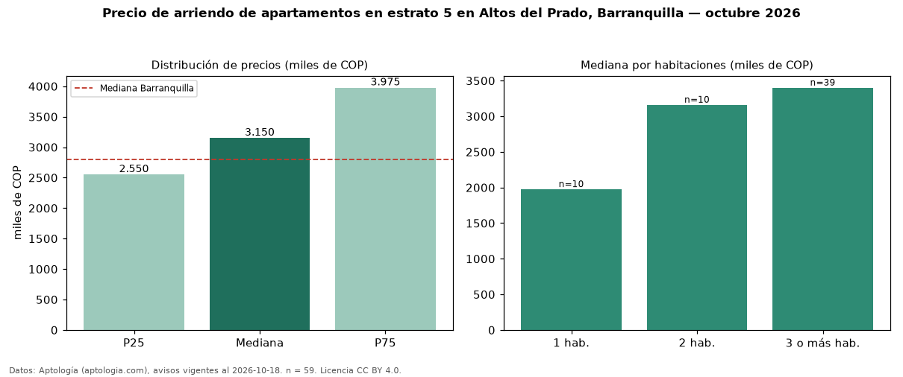

Precio de arriendo de apartamentos en estrato 5 en Altos del Prado, Barranquilla — octubre 2026
En Altos del Prado, Barranquilla, la mediana de canon mensual de apartamentos en estrato 5 es COP 3,15 millones, según 59 avisos vigentes. Frente a la mediana de toda la vivienda de estrato 5 de Altos del Prado (COP 3,25 millones, n = 70), queda 3 % por debajo; este segmento reúne el 84 % de esos avisos. Por metro cuadrado, la mediana es COP 25.022/m² al mes (n = 58), 8 % por debajo del conjunto de referencia (COP 27.344/m²). El área mediana anunciada es 128 m². El segmento con más oferta es el de 3 o más habitaciones (39 avisos, mediana COP 3,40 millones); pasar de 1 habitación a 3 o más habitaciones cambia la mediana +72 %. La administración mediana declarada es COP 820.000 al mes (n = 16), aparte del canon. La mediana de todos los apartamentos en arriendo de Barranquilla es COP 2,80 millones (+12 % de diferencia). La mitad central de los avisos va de COP 2,55 millones a COP 3,98 millones (razón 1,6), una dispersión moderada. Datos: Aptología (aptologia.com), CC BY 4.0 — https://www.aptologia.com/arriendo/barranquilla/altos-del-prado. Archivos: PDF, CSV con las cifras y gráfica PNG.

| Avisos únicos | 59 |
|---|---|
| Percentil 25 | COP 2.550.000 |
| Mediana | COP 3.150.000 |
| Percentil 75 | COP 3.975.000 |
| Mediana por m² | COP 25.021 |
Fuente: avisos vigentes de portales inmobiliarios recopilados por Aptología, deduplicados (mínimo 30 avisos únicos por celda). Precios pedidos, no cerrados. Fecha: 2026-10-18.